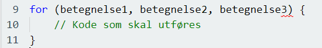
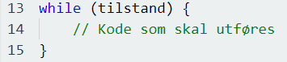

Hva er en løkke
Løkker er det vi bruker i programmering når vi ønsker å kjøre en blokk med kode flere ganger. Dette er nyttig hvis man ønsker at en kode skal kjøre om igjen hver gang med ulike verdier. Dette bruker vi ofte når vi jobber med arrays. For eksempel hvis vi har en array som skal holde på ulike verdier for biler (denne arrayen kaller vi da for «cars»), istedenfor å skrive ut alle verdiene på denne måten:

Så lager vi heller en enkel løkke som går gjennom alle verdiene i arrayen og skriver dem. Det vil da se noe ut som dette:

I koden over så forteller vi Micro:Bit at den skal holde på to variabler. Den ene variebelen er en liste over ulike navn på biler, og den andre skal være tom og skrive ut bilnavnene etter at løkken har blitt kjørt. I løkken så ber vi koden om å gå gjennom hver verdi av listen og skrive dem ut i variabelen «text». Dette skal løkken gjøre så mange ganger som det finnes elementer i listen. Helt til slutt, så ber vi Micro:Bit vise verdiene som har blitt satt inn i variabelen «text».Når det kommer til løkker så har vi to ulike løkker som vi bruker mest. Disse to kaller vi for-løkker og while-løkker.
For-løkker
En for-løkke, som vist i eksempelet over, består av 3 betegnelser som vi bruker for å gi beskjed til løkken om hva den skal utføre i selve kodeblokken. Første betegnelsen er det som blir sjekket først og bare en gang før kodeblokken kjøres. Andre betegnelsen definerer tilstanden for å kjøre kodeblokken, og den tredje tilstanden er det som blir kjørt etter at selve kodeblokken har blitt kjørt. Oppskriften på en vanlig for løkke ser da slik ut:
While-løkke
Når vi lager while-løkker i et program så forteller vi programmet at en blokk med kode skal kjøre så lenge en spesifisert tilstand er sann. Oppskriften på en slik løkke vil se slik ut:
I et praktisk eksempel så kan vi spesifisere at en blokk med kode skal utføres så lenge variabelen i er mindre enn 10. Slik vil dette se ut når vi skriver dette i kode:

I eksempelet over så lager vi en variabel som vi kaller i og gir den en verdi av 5. I løkken under så sier vi at så lenge variabelen i er mindre enn 10, så skal Micro:Bit vise teksten «Hei!». Siden while-løkker bare vil fungere hvis en spesifikk tilstand er sann, hva vil da skje hvis tilstanden ikke er møtt? Hvis man ikke har skrevet noe kode i programmet for en tilstand som ikke stemmer med while-løkken, så vil programmet ikke vise noe. Hvis man derimot har skrevet kode som skal skje hvis ikke while-tilstanden er møtt, så vil denne koden vises isteden. Praktisk eksempel:

I dette eksempelet så forteller vi koden at hvis variabelen i er større enn 10, så skal Micro:Bit vise teksten «Ha det bra», og som vi ser i variabelen så holder den på en verdi av 11.
Hvorfor bruker vi løkker?
Hovedsakelig så bruker vi løkker innen programmering for å forminske mengden med arbeid vi må gjøre for å lage et program. Ved hjelp av løkker så slipper vi å skrive mye mer kode en nødvendig, i tillegg til dette så får vi også kjørt selve programmet mye fortere ved hjelp av dette siden programmet da ikke behøver å gå gjennom mye kode når den kjører.